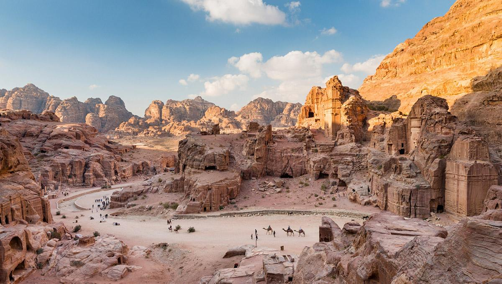

NOVIDADES

Jordânia
Jordania (en árabe: الأردنّ Al-’Urdunn), oficialmente Reino Hachemita de Jordania (en árabe: المملكة الأردنّيّة الهاشميّة Al-Mamlakah al-Urdunīyah al-Hāshimīyah), llamado Transjordania hasta 1950, es un país de Asia ubicado en la región de Oriente Medio. Limita al Norte con Siria, al noreste con Irak, al este y sur con el reino de Arabia Saudita, al suroeste con el mar Rojo (en el golfo de Aqaba), y al oeste con el mar Muerto, Israel y Palestina. Su capital y ciudad más poblada es Amán.
El reino se creó a raíz de la división de la región llevada a cabo por Francia y Reino Unido tras la Primera Guerra Mundial. En 1946 Jordania se convirtió en un estado soberano e independiente con el nombre inicial de Reino Hachemita de Transjordania. Tras la captura de Cisjordania durante la Guerra árabe-israelí de 1948, Abdalá I tomó el título de Rey de Jordania y Palestina.
Jordania es una monarquía constitucional en la que el rey (en estos momentos Abdalá II) ostenta amplios poderes ejecutivos y legislativos. El país está clasificado como de un desarrollo humano alto,4 según el Informe de desarrollo humano de 2014, así como un mercado emergente gracias a la libertad de su economía en comparación con los países de su entorno.5 Jordania ha disfrutado desde 2010 de un estatus avanzado en sus relaciones con la Unión Europea6 y es miembro de la Zona de libre comercio euromediterránea. El país fue miembro fundador de la Liga Árabe7 y de la Organización para la Cooperación Islámica.